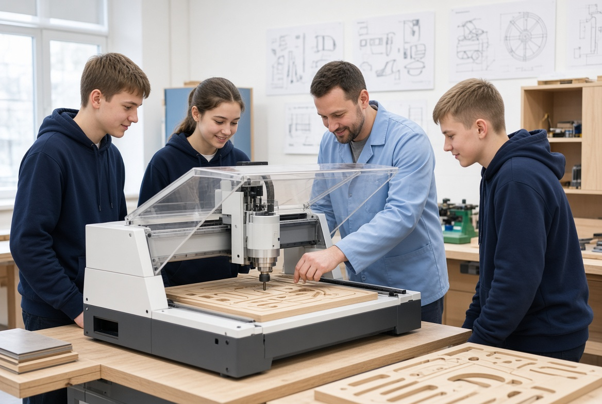

Для государственных и муниципальных заказчиков
Поставка учебных фрезерно-гравировальных станков ЧПУ 3040 / 4060 для школ, колледжей, университетов и других учреждений

Почему эти станки подходят для обучения
Станки ЧПУ 3040 и 4060 — это рабочий инструмент, на котором можно начинать осваивать числовое программное управление уже на начальном этапе. Они развивают инженерное мышление, понимание координат, траекторий, материалов и процессов обработки.
Оборудование можно укомплектовать с учётом места эксплуатации:
- для школ — защитная кабина, датчики открытия (станок останавливается при случайном открытии), менее мощный шпиндель и дополнительные элементы безопасности;
- для колледжей и университетов — более производительные конфигурации под задачи лабораторий и мастерских.
Все нюансы комплектации (кабина, датчики, мощность шпинделя, программное обеспечение, дополнительные опции) обговариваем индивидуально под ваше техническое задание и условия эксплуатации.
Для кабинета труда (технологии) и центров «Точка роста»: характеристики учебного станка для спецификации, цена и сравнение с рынком. Коды КТРУ и порядок по ПП 1875 — ниже на этой странице.
Как приобрести оборудование в рамках госзакупок
Коммерческое предложение и сопроводительные материалы предоставляются для заключения договора с заказчиком напрямую, а не для размещения описания объекта закупки в ЕИС, на площадках (РТС-тендер и др.) или для проведения конкурентных процедур.
Если вам нужны наши станки и по техническому заданию не удаётся найти подходящее оборудование российского происхождения с реестровой записью в Минпромторге (постановление Правительства РФ № 719), мы бесплатно подготовим:
- коммерческое предложение на выбранную конфигурацию станка;
- обоснование невозможности закупки товара российского происхождения (с учётом характеристик по вашему ТЗ и отсутствия соответствующих позиций в реестре российской промышленной продукции).
Это обоснование заказчик может использовать при подготовке обращения в Минпромторг или в составе документов по постановлению Правительства РФ № 1875 (национальный режим) для подтверждения права закупки оборудования иностранного происхождения.
ПП РФ №1875, КТРУ и ОКПД2 для наших станков
С 1 января 2025 года национальный режим в закупках по 44-ФЗ и 223-ФЗ регулирует одно постановление Правительства РФ от 23.12.2024 № 1875. Оно заменило прежние акты о запретах и ограничениях, в том числе постановления № 616 и 617 (промышленные товары) и № 878 (радиоэлектроника). Если в шаблоне ТЗ или обоснования у вас ещё стоят ссылки на 616 или 878, их нужно заменить на 1875.
Какие позиции КТРУ подходят для фрезерно-гравировального станка
| Позиция КТРУ / ОКПД2 | Что это | Мера по ПП 1875 |
|---|---|---|
| 28.49.12.113-00000002 ОКПД2 28.49.12.113 | Станок фрезерный деревообрабатывающий с числовым программным управлением. Обязательные характеристики: уровень автоматизации (ЧПУ), конструкция, мощность, масса, максимальная и минимальная частота вращения шпинделя, максимальная ширина и глубина обработки. | Запрет: приложение № 1, позиция 67 «Станки для обработки камня, дерева и аналогичных твёрдых материалов» (28.49.1) |
| 28.41.22.130-00000001 ОКПД2 28.41.22.130 | Станок фрезерный металлообрабатывающий с ЧПУ. Обязательные характеристики включают класс точности, мощность, массу, частоты вращения шпинделя и ширину обработки. | Запрет: приложение № 1, позиция 64 «Станки токарные, расточные и фрезерные металлорежущие» (28.41.2) |
Какой код подходит для станков 3040 и 4060
Наши 3040 и 4060 — настольные фрезерно-гравировальные станки: шпиндель 1,5 кВт, до 24 000 об/мин, рабочее поле 300×400×100 и 400×600×120 мм, масса меньше 0,1 т. Основные материалы — дерево, фанера, МДФ, акрил, пластики; алюминий, латунь и медь обрабатываются лёгкими режимами. Сталь на таком станке не обрабатывают.
- Если станок покупают для кабинета труда (технологии), «Точки роста» или мастерской, где работают в основном с деревом и пластиком, по смыслу подходит 28.49.12.113-00000002. Конструкцию в этой позиции обычно выбирают «Фрезерно-модельный станок» или «Вертикально-фрезерный», ширину обработки — до 500 мм.
- Позиция 28.41.22.130-00000001 рассчитана на металлорежущие станки. Её стоит выбирать, только если основная задача — обработка металла. Для настольного гравёра с шпинделем на цанге ER11 она обычно подходит хуже.
Окончательно позицию КТРУ выбирает заказчик: она зависит от того, что именно будут делать на станке. Мы можем прислать характеристики станка в формулировках обеих позиций, чтобы было проще сравнить.
Как оформить закупку иностранного станка при запрете
Обе позиции входят в приложение № 1 к ПП 1875, то есть под запрет. При запрете заявка с иностранным товаром отклоняется, а контракт на такой товар с единственным поставщиком не заключается (п. 2 ч. 4 ст. 14 44-ФЗ). Поэтому одного обоснования в документах закупки недостаточно. Порядок такой:
- Заказчик проверяет реестр российской промышленной продукции (ПП № 719, ГИСП): есть ли российский станок с нужными характеристиками.
- Если подходящего российского станка нет, заказчик до начала закупки обращается в Минпромторг через ГИСП за разрешением на закупку иностранной промышленной продукции (подп. «а» п. 5 ПП 1875, порядок утверждён приказом Минпромторга от 09.01.2025 № 7). В обращении указываются характеристики станка по позиции КТРУ; заявка подаётся отдельно на каждый товар.
- С полученным разрешением заказчик указывает в извещении (или в документах закупки у единственного поставщика) неприменение запрета со ссылкой на подп. «а» п. 5 ПП 1875.
Мы бесплатно готовим к прямому договору коммерческое предложение и перечень характеристик станка для обращения в Минпромторг: со значениями по позиции КТРУ и пояснением, какие из них важны для учебного процесса. Подавать обращение и принимать решение о закупке будет сам заказчик.
Программное обеспечение: «Универсал» в реестре российского ПО
Программа управления станками «Универсал — система ЧПУ» включена в единый реестр российских программ для ЭВМ и баз данных: реестровая запись № 32835 от 31.03.2026, класс 08.06 «Средства управления оборудованием с числовым программным управлением (CAM)». Запись можно проверить на reestr.digital.gov.ru по номеру 32835. Правообладатель — гражданин РФ, подробнее на странице программы.
Если программное обеспечение закупают отдельной позицией, номер реестровой записи подтверждает российское происхождение ПО (п. 3 ПП 1875). На сам станок это не распространяется: для станка действует запрет, описанный выше.
Для школ мы собрали отдельную страницу: учебный фрезерно-гравировальный станок для кабинета «Труд (технология)» и «Точки роста». На ней характеристики для спецификации без указания товарного знака, цена и комплектация с защитной кабиной.
Свяжитесь с нами
Телефон / WhatsApp: +7 961 991 01 76
Telegram: тот же номер или напишите в WhatsApp — переведём на удобный канал
Почта: stepmotoren@yandex.ru
Напишите или позвоните — уточним комплектацию под ваше учреждение (школа, колледж, университет, другое), подготовим коммерческое предложение и обоснование.